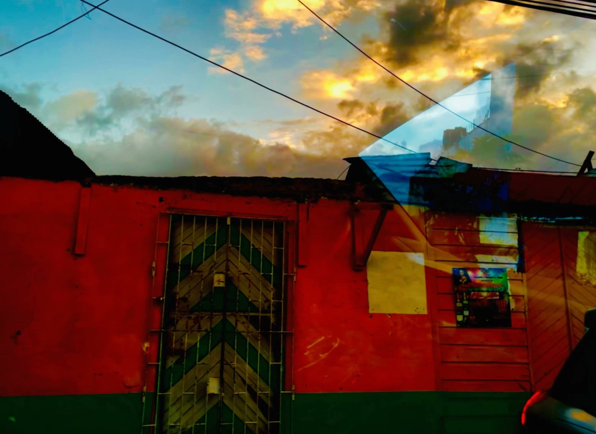
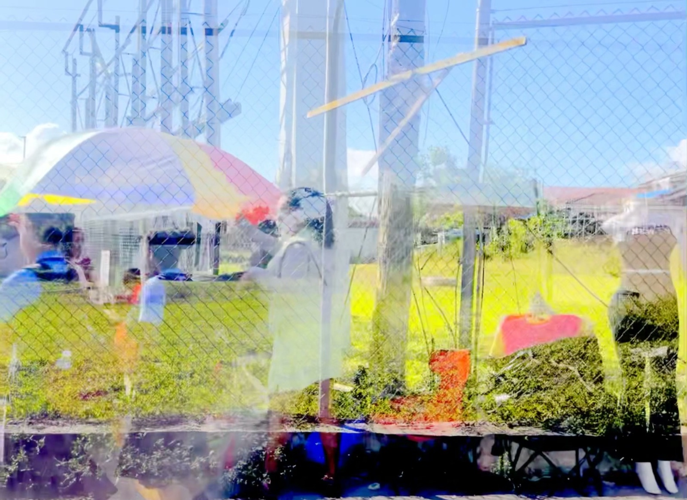

The Maker
An archive engine over Lanois’s personal film and audio collection: thousands of files indexed, 95 sessions transcribed, chord and harmony analysis across 221,000 events, stems separated, and thematic cuts assembled into DaVinci Resolve. It carries the title-design and slow-motion tooling behind the videos, and the audio and performance rigs: a PT93 plugin clone, a freeze setup for guitar and pedal steel, a NAM/RAVE/impulse-capture pipeline, and voice cloning. Fine-art prints for Beckett Fine Art came from the same footage.


Fine-art print masters, Beckett Fine Art